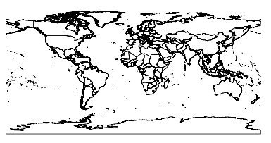

Οδηγός Γρήγορης Εκκίνησης R¶
Το R είναι ένα περιβάλλον ελεύθερου κώδικα για στατιστικούς υπολογισμούς και γραφήματα.
Αυτός ο οδηγός περιγράφει:
- Τη χρήση του R για απλούς μαθηματικούς υπολογισμούς
- Τη φόρτωση δεδομένων από ένα shapefile και τη σχεδίασή τους
- Ένα μετασχηχματισμό συστήματος αναφοράς
- Τη σχεδίαση ορισμένων σημείων πάνω σε ένα χάρτη
Εκκίνηση του R¶
Είτε:
- Επιλέγοντας
R Statisticsαπό το start menu- θα εμφανιστεί ένα τερματικό στο οποίο θα τρέχει το R.- Αλλιώς δίνοντας την εντολή
Rσε ένα τερματικό. Το R θα ξεκινήσει στο συγκεκριμένο τερματικό (που δώσατε την εντολή).
Μη φοβάστε τη γραμμή εντολών/τερματικό - είναι πηγή μεγάλης δύναμης. Χρησιμοποιώντας τα βέλη πάνω και κάτω γίνεται η ανάκληση εντολών ώστε είναι δυνατή η αλλαγή λαθών, κάτι που βοηθά σημαντικά. Πατώντας το συνδυασμό CTRL-C στο πληκτρολόγιο εάν κολήσει, θα πρέπει να σας επιστρέψει στο τερματικό.
Quit R¶
Σχεδόν τα πάντα στο Ρ είναι μια συνάρτηση, συμπεριλαμβανομένου και της συνάρτησης για έξοδο. Πληκτρολογήστε
q() και μετά enter. Εάν απλώς πληκτρολογίσετε q θα δείτε τον πηγαίο κώδικα της συνάρτησης``q``.
Το R θα ρωτήσει εάν θέλετε να σώσετε το περιβάλλον εργασίας σας σαν εικόνα δεδομένων τύπου R. Όταν
ξεκινήσετε το R ξανά μέσα από ένα φάκελο που περιλαμβάνει ένα αρχείο τύπου .RData θα επανακτήσει όλα τα δεδομένα του από εκεί.
Ξεκινώντας το R¶
Το R κατ’ ουσίαν είναι ένα πρόγραμμα γραμμής εντολών παρόλο που υπάρχουν διαθέσιμα γραφικά περιβάλλοντα. Πληκτρολογώντας μια γραμμή εντολών στο τερματικό, πατήστε enter, και ο διερμηνευτής του R υπολογίζει την εντολή και εκτυπώνει το αποτέλεσμα.
Μπορείτε να ξεκινήσετε με απλούς αριθμητικούς υπολογισμούς
> 3*2
[1] 6
> 1 + 2 * 3 / 4
[1] 2.5
> sqrt(2)
[1] 1.414214
> pi * exp(-1)
[1] 1.155727
Μια μεγάλη συλλογή από αριθμητικές, τριγωνομετρικές και στατιστικές συναρτήσεις είναι διαθέσιμές σε πακέτα στη βιβλιοθήκη`CRAN <http://cran.r-project.org/>`_.
Η κύρια προτροπή εντολών του R είναι το >, αλλά υπάρχει και η προτροπή συνέχειας , +, η οποία
εμφανίζεται εάν το R περιμένει την εισαγωγή και άλλων δεδομένων για τον υπολογισμό μιας έκφραση. Θα δείτε το ακόλουθο, έαν
ξεχάσετε να κλείσετε μια αγκύλη ή μια παρένθεση.
> sqrt(
+ 2
+ )
[1] 1.414214
Αναπτύσσοντας Δεδομένα¶
Πιθανώς αναρωτιέστε ποια η ύπαρξη του μυστηριώδους ‘ένα’ σε αγκύλες όταν δίνεται κάποιο αποτέλεσμα. Αυτό σας ενημερώνει πως το αποτέλεσμα είναι ένας μοναδικός αριθμός. Το R αποθηκεύει πράγματα σε μονοδιάστατα διανύσματα καθώς και σε δυδιάστατους ή πολυδιάστατους πίνακες.. Υπάρχουν πολλές συναρτήσεις που παράγουν τέτοια αποτελέσματα. Εδώ είναι μια απλή σειρά (sequence):
> seq(1,5,len=10)
[1] 1.000000 1.444444 1.888889 2.333333 2.777778 3.222222 3.666667 4.111111
[9] 4.555556 5.000000
Τώρα βλέπετε πως το [9] υποδηλώνει ότι το 4.555 είναι η ένατη τιμή του διανύσματος.
Εάν κατασκευάσετε ένα πίνακα, θα δείτε τίτλους για τις γραμμές και τις στήλες του:
> m=matrix(1:12,3,4)
> m
[,1] [,2] [,3] [,4]
[1,] 1 4 7 10
[2,] 2 5 8 11
[3,] 3 6 9 12
Στοιχεία των πινάκων μπορούν να εξαχθούν χρησιμοποιώντας αγκύλες, με τις θέσεις της γραμμής και της στήλης να διαχωρίζονται με κόμμα. Αφήστε μια θέση κενή για να πάρετε μια ολόκληρη γραμμή ως διάνυσμα. Χρησιμοποιείστε ένα διάνυσμα θέσης για να πάρετε πολλαπλές γραμμές ή στήλες ως υποπίνακες:
> m[2,4]
[1] 11
> m[2,]
[1] 2 5 8 11
> m[,3:4]
[,1] [,2]
[1,] 7 10
[2,] 8 11
[3,] 9 12
Τα πλαίσια δεδομένων (Data frames) είναι δομές δεδομένων που αντικατοπτρίζουν το είδος της δομής που βρίσκεται σε μια σχεσιακή βάση δεδομένων όπως η Postgres ή η MySQL. Κάθε γραμμή μπορεί να θεωρηθεί ως μία γραμμή, με τις στήλες να είναι σαν τα πεδία μιας βάσης. Όπως σε μία βάση δεδομένων, κάθε πεδίο πρέπει να είναι του ίδιου τύπου για κάθε εγγραφή.
Σε πολλές περιπτώσεις λειτουργούν όπως οι πίνακες, αλλά μπορείτε να πάρετε ή να θέσετε γραμμές με βάση το όνομα, χρησιμοποιώντας το σύμβολο $:
> d = data.frame(x=1:10,y=1:10,z=runif(10)) # z is 10 random numbers
> d
x y z
1 1 1 0.44128080
2 2 2 0.09394331
3 3 3 0.51097462
4 4 4 0.82683828
5 5 5 0.21826740
6 6 6 0.65600533
7 7 7 0.59798278
8 8 8 0.19003625
9 9 9 0.24004866
10 10 10 0.35972749
> d$z
[1] 0.44128080 0.09394331 0.51097462 0.82683828 0.21826740 0.65600533
[7] 0.59798278 0.19003625 0.24004866 0.35972749
> d$big = d$z > 0.6 # d$big is now a boolean true/false value
> d[1:5,]
x y z big
1 1 1 0.44128080 FALSE
2 2 2 0.09394331 FALSE
3 3 3 0.51097462 FALSE
4 4 4 0.82683828 TRUE
5 5 5 0.21826740 FALSE
> d$name = letters[1:10] # create a new field of characters
> d[1:5,]
x y z big name
1 1 1 0.44128080 FALSE a
2 2 2 0.09394331 FALSE b
3 3 3 0.51097462 FALSE c
4 4 4 0.82683828 TRUE d
5 5 5 0.21826740 FALSE e
Φορτώνοντας Χαρτογραφικά Δεδομένα¶
Υπάρχουν πολλά πακέτα για διαχείριση χωρικών δεδομένων και στατιστική. Κάποια περιλαμβάνονται εδώ, και κάποια μπορούν να αποκτηθούν μέσα από το CRAN.
Εδώ θα φορτώσουμε δύο shapefiles - τα όρια των κρατών και τα κατοικημένα μέρη από το Natural Earth data. Θα χρησιμοποιήσουμε δύο επιπρόσθετα πακέτα για να έχουμε χωρική λειτουργικότητα:
> library(sp)
> library(maptools)
> countries = readShapeSpatial("/usr/local/share/data/natural_earth/10m_admin_0_countries.shp")
> places = readShapeSpatial("/usr/local/share/data/natural_earth/10m_populated_places_simple.shp")
> plot(countries)
Αυτό μας δίνει έναν απλό χάρτη του κόσμου:
Όταν ένα OGR dataset διαβάζεται από το R με αυτό τον τρόπο παίρνουμε πίσω ένα αντικείμενο το οποίο
συμπεριφέρεται πολλές φορές σαν ένα data frame. Μπορούμε να χρησιμοποιήσουμε το πεδίο COUNTRY
για να επιλέξουμε ένα υποσύνολο των δεδομένων, για παράδειγμα τη UK:
> uk = countries[countries$COUNTRY=="United Kingdom",]
> plot(uk); axis(1); axis(2)

Μοιάζει λίγο συμπιεσμένο σε οποιονδήποτε ζει εκεί, καθώς είμαστε συνηθισμένοι με ένα σύστημα αναφοράς προσαρμοσμένο στο γεωγραφικό μας πλάτος. Για την ώρα, το αντικείμενο δεν έχει ένα σύστημα αναφοράς προσαρτημένο σε αυτό, μπορούμε να το ελέγξουμε με μερικές ακόμα συναρτήσεις:
> proj4string(uk)
[1] NA
Το NA υποδεικνύει έλλειψη δεδομένων . Πρέπει να προσαρτήσουμε ένα σύστημα αναφοράς (CRS) πριν το μετασχηματίσουμε με τη συνάρτηση spTransform από το πακέτο rgdal. Μετασχηματίζουμε
στο EPSG:27700 το οποίο είναι το σύστημα αναφοράς της τοπογραφικής υπηρεσίας πυροβολικού της Μεγάλης Βρετανίας:
> proj4string(uk)=CRS("+init=epsg:4326")
> library(rgdal)
> ukos = spTransform(uk,CRS("+init=epsg:27700"))
> proj4string(ukos)
[1] " +init=epsg:27700 +proj=tmerc +lat_0=49 +lon_0=-2 +k=0.9996012717 +x_0=400000 +y_0=-100000 +ellps=airy +datum=OSGB36 +units=m +no_defs
+towgs84=446.448,-125.157,542.060,0.1502,0.2470,0.8421,-20.4894"
> plot(ukos);axis(1);axis(2)
Αυτό σχεδιάζει το βασικό χάρτη από τα μετασχηματισμένα δεδομένα. Τώρα μπορούμε να προσθέσουμε μερικά σημειακά δεδομένα από το dataset των κατοικημένων περιοχών. Ξανα παίρνουμε ένα υποσύνολο των σημείων που θέλουμε και τα μετασχηματίζουμε στις συντεταγμένες του συστήματος της τοπογραφικής υπηρεσίας του πυροβολικού:
> ukpop = places[places$ADM0NAME=="United Kingdom",]
> proj4string(ukpop)=CRS("+init=epsg:4326")
> ukpop = spTransform(ukpop,CRS("+init=epsg:27700"))
Προσθέτουμε αυτά τα σημεία στο βασικό χάρτη, σμικρύνοντάς τα με το την κλιμακοποιημένη τετραγωνική ρίζα του πληθυσμού (Επειδή αυτό δημιουργεί ένα σύμβολο με εμβαδό αναλογικό με τον πληθυσμό), θέτωντας το χρώμα του συμβόλου να είναι κόκκινο και το χρώμα του σχεδιαζόμενου χαρακτήρα σε solid blob:
> points(ukpop,cex=sqrt(ukpop$POP_MAX/1000000),col=”red”,pch=19) > title(“UK Population centre sizes”)
Και η τελική μας εικόνα είναι η ακόλουθη:

Στιγμιότυπα¶
Στο παρελθόν η τεκμηρίωση για τα πακέτα του R έτεινε να είναι λακωνικά γραμμένες σελίδες βοήθειας για κάθε συνάρτηση. Τώρα οι ιδιοκτήτες των πακέτων ενθαρύνονται να γράψουν ένα ‘στιγμιότυπο’ (vignette) ως μία φιλική εισαγωγή στο πακέτο. Αν απλώς τρέξετε τη συνάρτηση``vignette()`` χωρίς ορίσματα, θα λάβετε μια λίστα αυτών που υπάρχουν στο σύστημα. Δοκιμάστε``vignette(“sp”)`` για μία μικρή τεχνική εισαγωγή στις χωρικές δομές δεδομένων του R, ή vignette("spdep") για μια στατική ανάλυση για χωρική αυτοσυσχέτιση. Το vignette("gstat") δίνει έναν οδηγό για τη χρήση του πακέτου αυτού για χωρική παρεμβολή, συμπεριλαμβανομένου και του Kriging.
in the use of that package for spatial interpolation including Kriging.
Διάβασμα...¶
Για γενικές πληροφορίες για το R, δοκιμάστε το επίσημο`Introduction to R <http://cran.r-project.org/doc/manuals/R-intro.html>`_ ή οποιαδήποτε από τις τεκμηριώσεις από την κεντρική σελίδα`R Project <http://www.r-project.org/>`_ page.
Για περισσότερες πληροφορίες για τις χωρικές επεκτάσεις του R, το καλύτερο μέρος να ξεκινήσετε πιθανότατα είναι το`R Spatial Task View <http://cran.r-project.org/web/views/Spatial.html>`_
Επίσης μπορεί να θέλετε να δείτε τη σελίδα R-Spatial στο sourceforge για μερικά ακόμα linksπου περιλαμβάνουν πληροφορίες για τη λίστα επαφών ηλεκτρονικού ταχυδρομείου the R-sig-Geo.